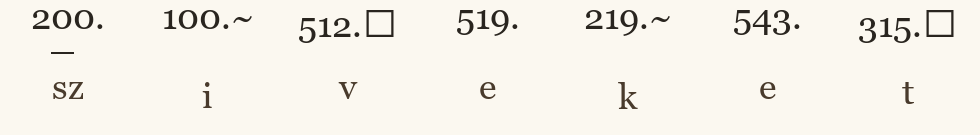

At a glanceExternal key matched · partial (93% of cipher tokens valued, not the word count)
- The letter
- János Szent-Ivány reports to Ferenc Rákóczi II from Munkács on 14 May 1711.
- Where
- Hungarian National Archives, G 15, Caps. H, Fasc. 240, ff. 112–113.
- The cipher
- The first digit and the mark distinguish letters, a digraph and a probable whole word.
- What it says
- Szent-Ivány explains why he has held back from offensive action and asks the prince to send people to encourage the garrison.
- Credit
- Imre Bánkúti and Kálmán Mészáros published the ciphertext and the values from the chancery’s decipherment of the later letter.
The cipher in two letters
The table headed Szent Ivany in DECODE R619 supplies none of the 56 numbers in this letter. A stronger lead lies eleven pages beyond the ciphertext in the same edition. In their document 24, from the same sender to the same recipient on 20 May, the editors identify the values of numbers deciphered at the chancery. Plain 5xx gives e, 5xx with a tilde gives n, and 5xx with an apostrophe gives v. Underlined 2xx gives sz.

The four passages
The published letter and digraph rows give 52 assignments. A tentative 53rd extends the editors’ proposed hogy for underlined 300 to underlined 333. The remaining three are the semicolon after 515, plain 214, and underlined 410. Coverage counts assignments. Some assigned letters still resist interpretation.
- [hogy] tülünk épen nem l[e]hét — “[that] it is quite impossible for us.” Plain 515 has the value needed for lehet, but the edition prints a semicolon.
- ha módom lesz [b]enne, [meg?]mutatom — “if I have the opportunity, I will show it.” The alphabetic sequence supports b. The prefix meg is a contextual proposal for underlined 410.
- észveszcü — possibly észvesztő, a historical word for someone out of their senses. The last two groups give c and ü. A day later Szent-Ivány wrote késűn for modern későn, supporting the vowel variation. The proposed t would require an apostrophe on 300.
- sziveket — “hearts.” All seven groups give the accusative plural that fits the surrounding clause.
Full texts
The transcription and the decryption of every document on this page, so that the reading can be used and checked. Short files are shown here; all are in the repository.
17 (MNL OL G 15, Caps. H, Fasc. 240, ff. 112–113, 14 May 1711) read in part
Szent-Ivány explains his restraint and asks the prince to send men to encourage the garrison.
Builds coherent sentences, but under the read bar of 95% of words read as sense; the holes are marked in the reading.
Transcription
# Bánkúti–Mészáros, no. 17, printed p. 1109. One blank line per passage. # Physical line breaks retained within passages. _ precedes an underlined digit. 3_33. 333.ʼ 1_00. 333.~ 1_42. 500.~ 200.~ 694. 808.~ 500. 555.~ 513.~ 595. 414.~ 309.~ 515; 918. 668. 315.ʼ 909. 134. 415.~ 643.~ 414. 663.~ 430.~ 394.~ 505. 2_14. 214. 500. 500.~ 559.~ 559. 4_10. 410.~ 410.ʼ 315.ʼ 111. 319.ʼ 694.~ 400.~ 646. 2_13. 514.ʼ 512. 2_22. 300. 1_00. 2_00. 100.~ 512.ʼ 519. 219.~ 543. 315.ʼ
Decryption
3_33.=[hogy?] 333.ʼ=t 1_00.=ü 333.~=l 1_42.=ü 500.~=n 200.~=k 694.=é 808.~=p 500.=e 555.~=n 513.~=n 595.=e 414.~=m 309.~=l 515;=[515;] 918.=h 668.=é 315.ʼ=t 909.=h 134.=a 415.~=m 643.~=o 414.=d 663.~=o 430.~=m 394.~=l 505.=e 2_14.=sz 214.=[214.] 500.=e 500.~=n 559.~=n 559.=e 4_10.=[4_10.] 410.~=m 410.ʼ=u 315.ʼ=t 111.=a 319.ʼ=t 694.~=o 400.~=m 646.=é 2_13.=sz 514.ʼ=v 512.=e 2_22.=sz 300.=c 1_00.=ü 2_00.=sz 100.~=i 512.ʼ=v 519.=e 219.~=k 543.=e 315.ʼ=t
Reading
# Four enciphered passages ## Reading [Hogy?] tülünk épen nem l[e]hét. Ha módom lesz [b]enne, […]mutatom. [?észvesztő] Szíveket.
Translation
# English, in dispatch order 1. “[That] it is quite impossible for us.” The omitted action is the offensive mentioned in the preceding clear text. 2. “If I have the opportunity, I will show it.” The proposed Hungarian prefix is uncertain. 3. “[?Someone out of their senses].” The clear text introduces this with “there are many”. 4. “Hearts”, the object of the preceding verb.
Key: decode.py
Sources
Bánkúti and Mészáros, document 17, p. 1109 · Document 24, p. 1120, note 209 and table · Hungarian etymological dictionary, eszeveszett
Transcription, decoder and research notes
Cite this page
Daniel Bourdeau, Imre Bánkúti and Kálmán Mészáros, “Szent-Ivány to Rákóczi, Munkács, 14 May 1711”, Cyphersolver, posted 23 November 2026, repository commit d48a72436c, https://cyphersolver.com/szentivany1711.html.